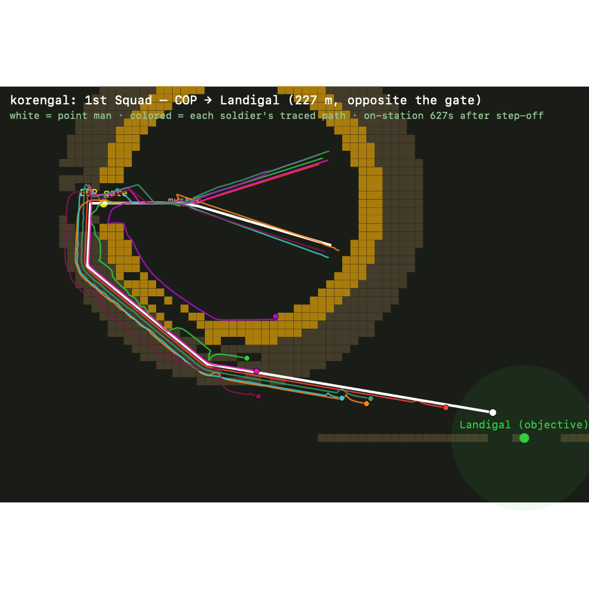
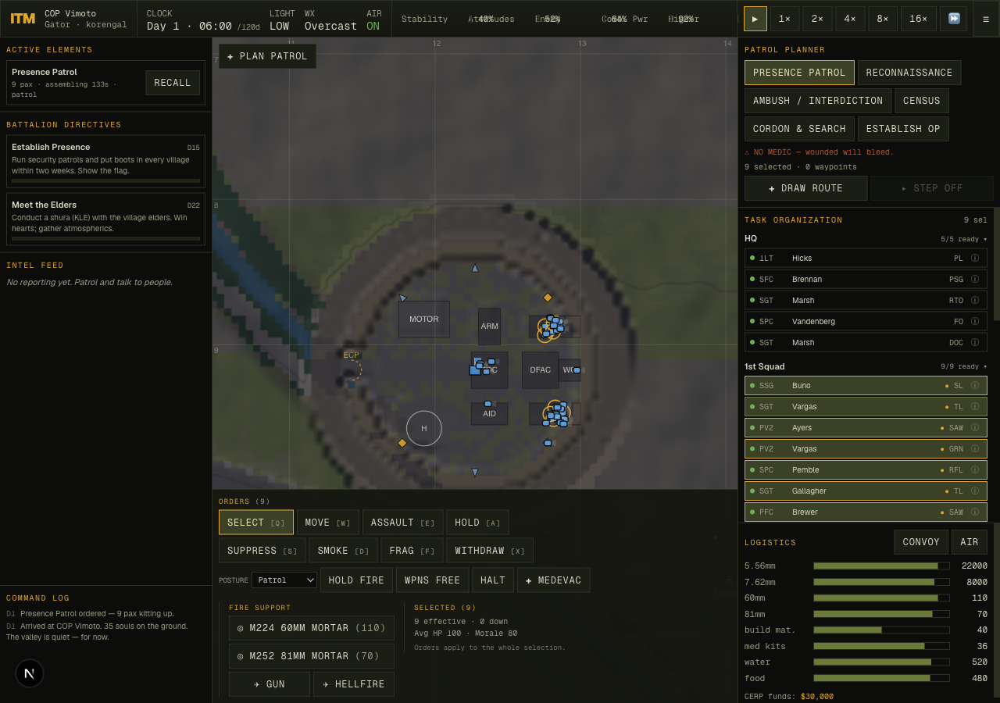
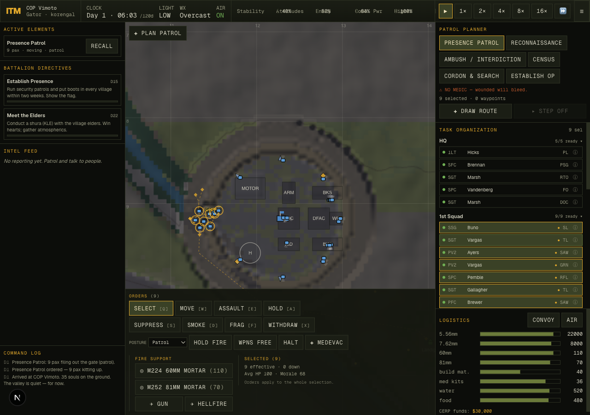
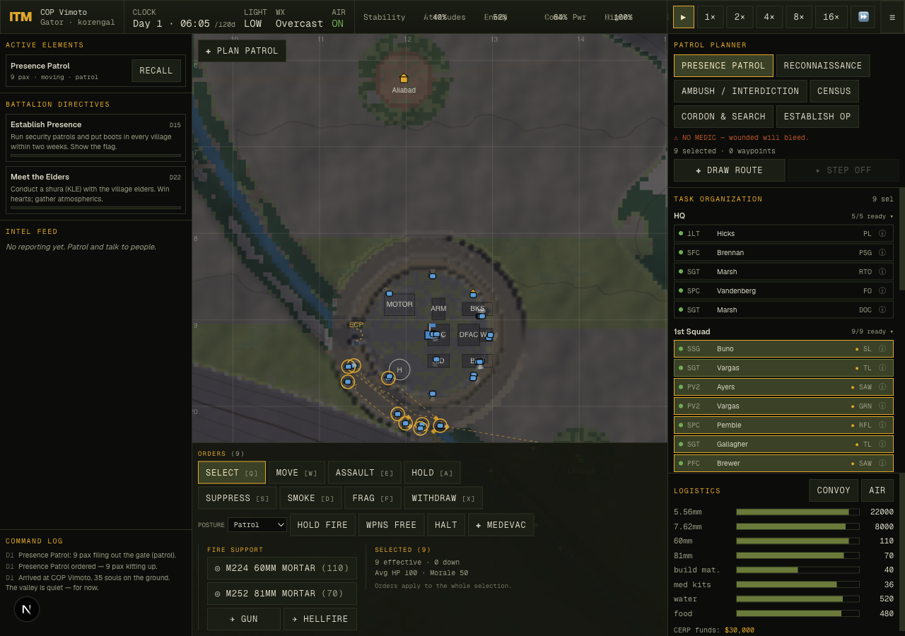

In the Mountains · tactical COIN simulator · after-action report · 2026-06-03
korengal):
before — never arrived, stalled 152 m short, “on-station” 300 m from the
objective →
after — files out, rounds the wall on the perimeter track, sets up 360° security
on Landigal. Verified across 16 seeds; build, tsc,
balance (no stranded elements), smoke all green.
“I tried to move a squad from inside the COP to the village just to the right. The path hugged the outer perimeter, as would make sense. But there wasn’t enough space — the squad wanted a wider formation, got stuck, bumped the perimeter, then accomplished its mission without making it to the village. Now they’re all stuck hugging the perimeter after briefly having waypoints inside that hopped the walls.”
Every clause of that report turned out to point at a different, real defect. The first job was to turn the prose into numbers.
I built a headless harness (scripts/movement-diag.ts) that recreates the exact situation
across seeds: form a presence patrol from 1st Squad to the village whose bearing is most opposite the
gate (the worst case — the squad must file out the ECP and round the entire HESCO ring), then measure
the failure modes the player described:
blockedTimer): “bumped the perimeter.”The baseline was damning — and matched the report precisely:
| seed (worst-case village) | arrived? | wall-blocked ticks | “finished” distance from objective |
|---|---|---|---|
| korengal (the player’s default) | NO — stalled 152 m short | 593 | 300 m |
| survey-9 | NO — stalled 183 m short | 11,364 | 279 m |
| valley-3 | NO — stalled 60 m short | 57 | 219 m |
| …5 of 7 seeds never reached the objective; squads declared “on-station” 150–390 m away. | |||
The single symptom (“gets stuck, finishes anyway”) hid four independent failures, each found by peeling back the one above it.
Followers were placed “at my slot, or beeline to the man ahead.” Around the convex HESCO ring both lines clip the wall, and the only recovery was a crude axis-slide that pins in concave pockets. Soldiers also walked straight through each other (peak 7 interpenetrating bodies). The motion integrator had no notion of steering around things or not overlapping.
The leg-completion backstop measured progress as straight-line distance from the squad centroid to the
objective. But when you round a convex obstacle, your straight-line distance to the goal temporarily
grows as you arc around the near side — even while you march perfectly along your route. So a 40-second
“no-progress” timer fired during a healthy march, force-advanced the leg, and enterOnStation()
froze the squad half-way. That is the “finished without reaching the village.”
The deepest one. The coarse pathfinder uses 15 m nodes (3×3 blocks of 5 m cells) and calls a node passable if any sub-cell is passable — a sane rule so a thin wall can’t seal a reachable goal. But the HESCO wall is only ~2 cells thick, so every coarse node on the wall ring still contained ~7 passable apron/interior cells and was scored as cheap, normal ground. At coarse resolution the wall was full of holes; A* happily cut through the enclosure — out the gate, across the yard, and back — exactly the “waypoints inside that hopped the walls.” The route to a 227 m village came out 555 m long and dived to the COP’s centre mid-route.
With the route fixed, two follow-ons remained. The fire-team wedge was as wide as in open country while threading the narrow benched track around the wall, shoving the flank men into the wire. And a soldier still inside the wire when the squad filed out had every breadcrumb point across the HESCO from him — he beelined at a slot through the wall and orbited the inner face, unable to see the gate 50 m away.
The squad shares one A* route (the navigator’s) — the global plan. Every soldier then steers locally along it as a physical body. Five mechanisms, each fixing one bug above:
lib/sim/steering.ts, wired into combat.ts moveUnit). Each tick a unit fans candidate headings around its goal, ray-probes each for clearance, and takes the clearest one still aimed at the goal — rounding convex obstacles instead of grinding them. A short-range push keeps bodies from overlapping (and naturally forms single file at a choke). When the lane ahead is clear and nobody crowds, it returns the goal heading unchanged, so open-ground and combat movement are untouched.world/tasks.ts). The leg backstop tracks the navigator’s remaining route length, which only falls — no more false completion on the convex turn. A genuinely stuck patrol sets up where it actually is, never pretending it reached a point it didn’t.terrain.ts wall ≥3 cells, path.ts quadratic penalty for blocked cells in a coarse node). The ring seals; A* routes around. A 227 m village route dropped from 555 m of interior tunnelling to a clean ~350 m arc.terrain.ts buildCop) — a graded patrol road ringing the wall, like a real COP, giving the planner a cheap, walkable way around to any bearing instead of the broken hillside.world/formation.ts). Followers walk the leader’s recorded breadcrumb (guaranteed-walkable around big obstacles); the wedge collapses to file as the sensed corridor narrows; a man trapped inside the wire A*-routes out through the gate, then resumes tracing.
Driving the live build (Playwright + the in-game tactical view), the same patrol on korengal:



| check | result |
|---|---|
npx tsc --noEmit | clean |
npm run build | compiled |
scripts/balance.ts 16 45 (16 seeds × 45 min, live combat) | ✓ no elements left stranded mid-route · firefights in 13/16 |
scripts/smoke.ts | full patrol cycle: out the gate → objective → back inside the wire |
scripts/movement-diag.ts (the reproduction harness) | 5/7 worst-case seeds now set up on the objective (was 2/7), incl. korengal |
Honest notes: two synthetic stress-seeds remain imperfect — one whose gate faces a cliff, one whose squad starts deep among interior buildings and dead-locks in the cramped yard. Both are COP-siting edge cases, not movement bugs, and don’t affect the default campaign. Separately, balance shows higher patrol casualties than before — an expected consequence of patrols now actually reaching contested objectives instead of stalling safely near the wire; the enemy-ambush timing is a known tuning follow-up.
The thing worth keeping isn’t any single constant — it’s the decomposition. Movement that “feels buggy” is almost always a layering problem:
Get those four layers right and emergent behaviour that looks hand-authored — a column narrowing at a gate, a wedge opening in the meadow, a straggler peeling out to the gate to rejoin — falls out for free.
Files: lib/sim/steering.ts · lib/sim/combat.ts · lib/sim/path.ts ·
lib/sim/terrain.ts · lib/sim/world/formation.ts · lib/sim/world/tasks.ts.
Harnesses: scripts/movement-diag.ts (reproduction + metrics) and
scripts/trajectory-svg.ts (the trace diagram).